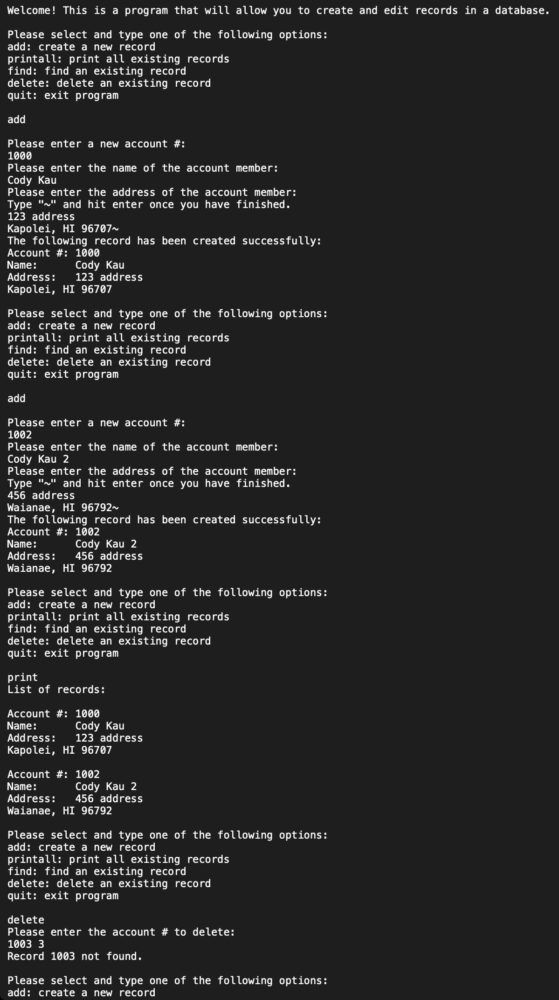

The database I created stored records that contained an account number, name, and address in a linked list. This project required me to be able to keep track of the address of each record and how it connected to other records in the linked list. In the database, I defined the following functions:
Additionally the program needed to read a specified file upon start up, and write on a specified file and free the allocated space when the user selected the quit option.
The user interface I created allowed the user to select between the following options:
Even if the user only typed a few letters of the option such as “ad”, the program would still execute the add option. This allows the user to simply type “q” to quit. However, if the user input an incorrect option, the program would print that it was an invalid entry. I needed to design the user interface so that it was intuitive to the user. If a record was added or found, I would print the specified record if it was successful. Otherwise, the program would print that there was an error.
Below is a screenshot of an example output from the program. 
This project spanned across multiple weeks and consisted of several different assignments that built each element of this project. It made it incredibly important to keep up with the assignments as well as making sure that we were able to debug it properly. If any one function of the program did not work, it would end up causing heavy delays on coding the rest of the project. I was able to gain experience on being on a linear development schedule, where each task built upon the previous one.
Since we needed to keep track of all of the records that we created, we had to develop many test cases to ensure that we weren’t either losing the address to the records that we created or any other assortment of bugs. Personally I ran into a lot of trouble making sure my add and delete functions worked properly because it required us to be accurate with our tracking of pointers.